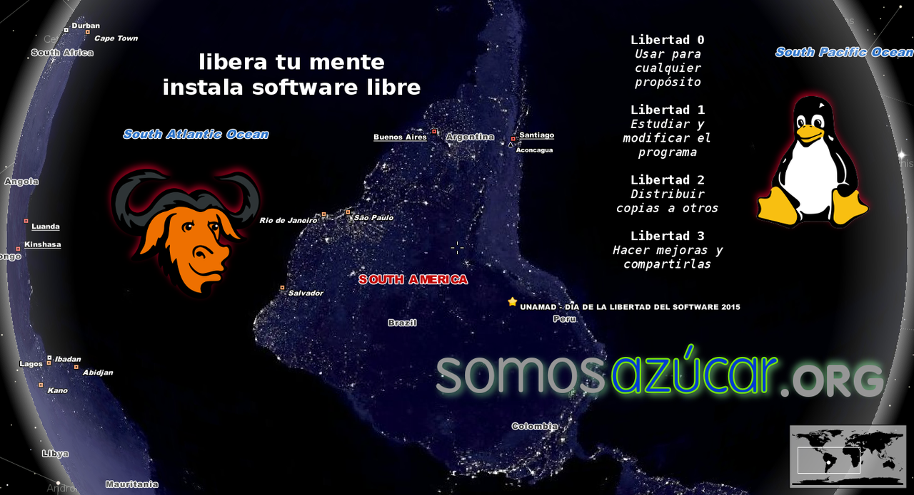

Celebrando el Día de la Libertad del Software en Puerto Maldonado
En participación del Día Internacional del Software Libre, el equipo de investigación y desarrollo SomosAZUCAR convoca a la ciudadanía a enterarse de la tecnología que tiene a su libre disposición, la cual puede utilizar hoy mismo para llevar vidas más elevadas, soberanas y significativas.
Compartiremos todo tipo de Software Libre que consideramos útil, desde recursos educativos, herramientas científicas, de diseño gráfico, arquitectura, estadística, programación, incluso videojuegos.
Lugar: UNAMAD Puerto Maldonado - Auditorio Principal
Fecha: Sábado 19 de Septiembre de 2015 - 9:00 AM

- 9:00-10:00 Presentación "Software Libre: Una opción Familiar"
- 10:00-10:30 Preguntas y Respuestas
- 10:30-12:00 Exhibición / Taller de Instalación
Comentarios